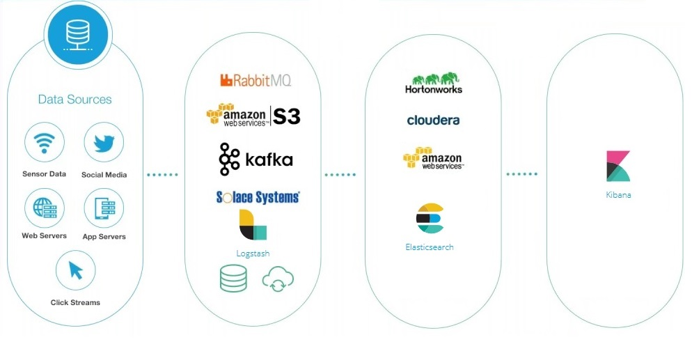
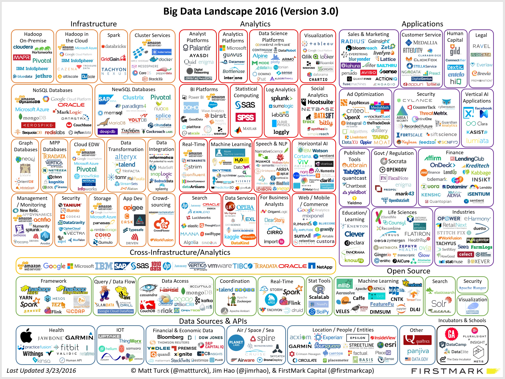
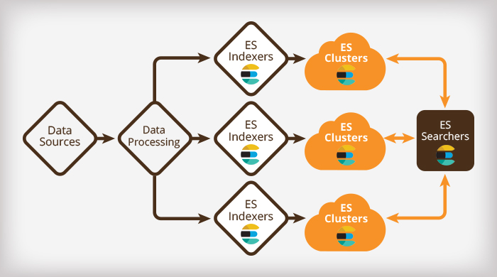
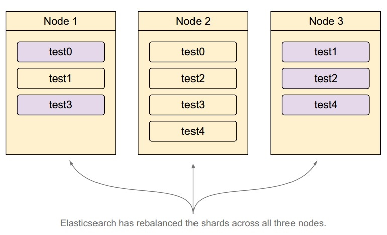
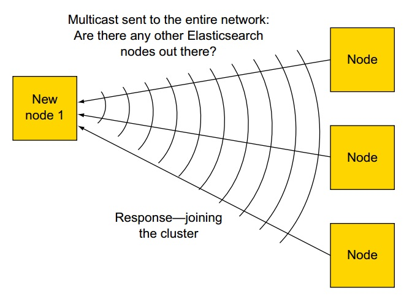
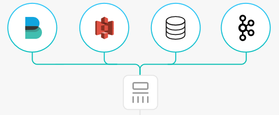
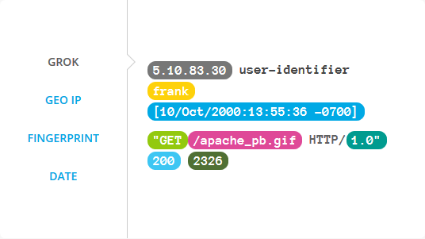
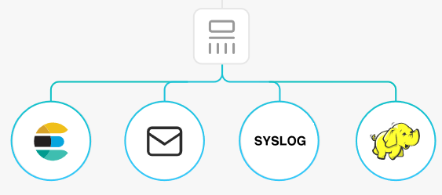
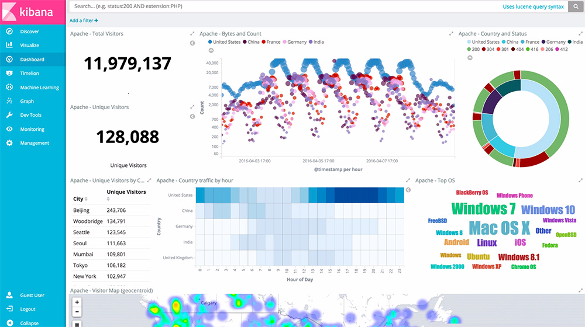
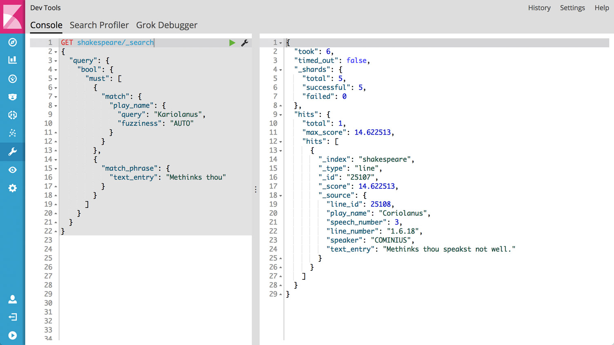

## ELK #### Elasticsearch, Logstash & Kibana Created by [Arnošt Havelka](http://cz.linkedin.com/in/arnosthavelka/)
## Agenda 1. The Concept 1. Elasticsearch 1. Logstash 1. Kibana 1. Live Demo 1. ZAM solution <p><small>See: <a href="https://www.elastic.co/">elastic.co</a></small></p>
## 1. The Concept 1. Overview 1. Architecture 1. Big Data Landscape 1. ELK products
## 1.1 Overview ELK stands for: 1. **Elasticsearch** - Full-text search engine - NoSQL database 1. **Logstash** - Data collector (filtering, modifications, etc.) 1. **Kibana** - - Web console (visualization, data analysis, etc.)
1.2 Architecture

1.3 Big Data Landscape

## 1.4 ELK products [1/2] 1. **Elasticsearch** - a distributed, RESTful search and analytics engine capable of solving a growing number of use cases. 1. **Kibana** - lets you visualize your Elasticsearch data and navigate the Elastic Stack 1. **Logstash** - is server-side data processing pipeline that ingests data from a multitude of sources simultaneously, transforms it, and then sends it to your favorite “stash.”.
## 1.4 ELK products [2/2] 1. **Beats** - is the platform for single-purpose data shippers. The Beats family consists of Filebeat, Metricbeat, Packetbeat, Winlogbeat, Heartbeat. 1. **X-Pack** - the additional components (security, alerting, monitoring, reporting, grapg, machine learning). 1. **Cloud** - the hosted Elasticsearch & Kibana on AWS and GCP.
## 2. Elasticsearch ### [Data Reservoir] 1. Overview 1. Features 1. Architecture 1. Key components (nodes, shards, indices etc.) 1. Cluster & Scaling 1. API 1. REST API usage <p><small>See: <a href="https://www.elastic.co/products/elasticsearch">Elasticsearch product page</a></small></p>
## 2.1 Overview 1. Search and analytics engine based on **Lucine** engine 1. Serves as NoSQL database 1. Uses standard RESTful APIs and JSON (including management & batch processing) 1. Clients are available in many languages such as Java, Python, .NET, and Groovy (and more by contributors)
## 2.2 Features 1. Handle data (indexing, CRUD operations) 1. Analyzing data (analyzers, tokenizers, stemming, ngrams, etc.) 1. Search data (via match or filter) 1. Searching with relevancy (boosting, reducing, scripting, etc.)
2.3 Architecture

## 2.4 Key components 1. **Node** - a single server that stores the data and participates in indexing and search capabilities. 1. **Index** - a collection of documents that have somewhat similar characteristics. 1. **Type** - a logical category/partition of your index. 1. **Document** - a basic unit of information that can be indexed. 1. **Shards & Replicas** - the basic element to store data. The index is split into multiple pieces called shards. <p><small>See: <a href="https://www.elastic.co/guide/en/elasticsearch/reference/current/_basic_concepts.html">Basic Concept</a></small></p>
2.5 Cluster & Scaling [1/3]

2.5 Cluster & Scaling [2/3]

2.5 Cluster & Scaling [3/3]
## 2.6 API Examples: 1. **_search** - search in defined index or type (including wildcards) 1. **_cat** - helpful diagnostic and debugging tools 1. **_cluster** - cluster tools 1. **_cache** - cache tools 1. and more <p><small>See: <a href="https://www.elastic.co/guide/en/elasticsearch/reference/current/_basic_concepts.html">Basic Concept</a></small></p>
## 2.7 REST API usage ``` curl -H "Content-Type: application/json" -XGET 'http://localhost:9200/social-*/_search' -d '{ "query": { "match": { "message": "myProduct" } }, "aggregations": { "top_10_states": { "terms": { "field": "state", "size": 10 } } } }' ```
## 3. Logstash ### [Data Collectors] 1. Inputs 1. Filters 1. Outputs
3.1 Inputs [1/2]

## 3.1 Inputs [1/2] 1. elasticsearch 1. file 1. jdbc 1. eventlog 1. and many more
3.2 Filters [1/2]

## 3.2 Filters [1/2] 1. grok 1. clone 1. split 1. translate 1. and many more
3.3 Outputs [1/2]

## 3.3 Outputs [1/2] 1. elasticsearch 1. email 1. file 1. jira 1. and many more
## 4. Kibana ### [Console] 1. Discover 1. Visualize 1. Dashboard 1. Dev Tools 1. Management
4.1 Dashboard

4.2 Dev Tools]

## 5. Live demo 1. Create data 1. Get data 1. Search data 1. Links
## 5.1 Create data ``` PUT aha/test/1 { "name": "Arnost", "title": "TL" } ``` ``` PUT aha/test/2 { "name": "Stano", "title": "Deputy" } ```
## 5.2 Retrieve data ``` GET aha/test/1 ``` ``` { "_index": "aha", "_type": "test", "_id": "1", "_version": 6, "found": true, "_source": { "name": "Arnost Havelka", "job": "TL" } } ```
## 5.3 Search all ``` GET _search { "query": { "match_all": {} } } ```
## 5.3 Search by field ``` GET _search { "query": { "match": { "name" : "arnost" } } } ```
## 5.4 Links to try yourself 1. http://demo.elastic.co/app/kibana (official) 1. http://localhost:9200/_cluster/health (local) 1. http://localhost:5601/app/kibana (local)
## 5. ZAM Solution 1. [Elasticsearch](http://172.20.10.220:9200/) 1. [Elasticsearch - cluster](http://172.20.10.220:9200/_cluster/health) 1. [Elasticsearch - indices](http://172.20.10.220:9200/_cat/indices?v) 1. [Kibana](http://172.20.10.220:5601/app/kibana#/) 1. [Kibana - ALL](http://172.20.10.220:5601/app/kibana#/dashboard/AV-lN-XvweEDF-88pEDI) 1. [Kibana - DEV](http://172.20.10.220:5601/app/kibana#/dashboard/AV-lLXtxweEDF-88pEBj)
THE END
Thank you!